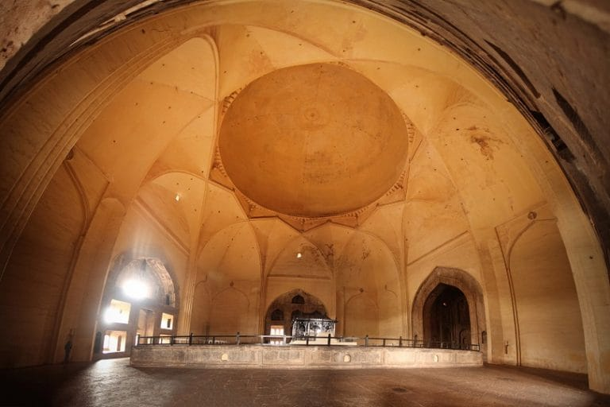
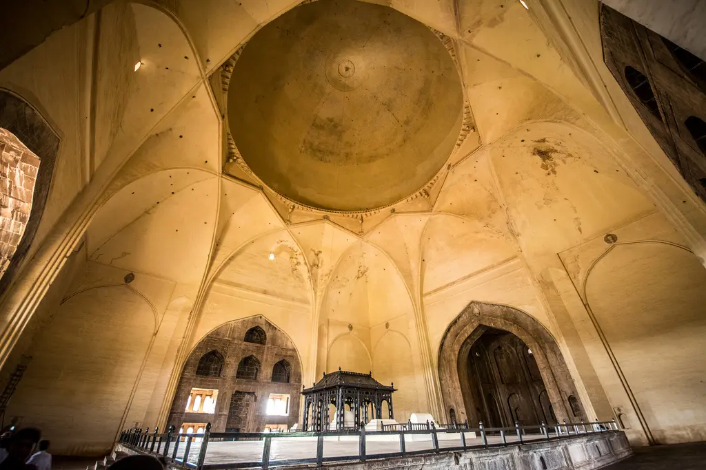

BIJAPUR GUMBAZ

Gol Gumbaz also written Gol Gumbad is a 17th-century mausoleum located in Bijapur, a city in Karnataka, India. It houses the remains of Mohammad Adil Shah, seventh sultan of the Adil Shahi dynasty, and some of his relatives. Begun in the mid-17th century, the structure never reached completion. The mausoleum is notable for its scale and exceptionally large dome.
 It is an important example of the southern regional style of Indo-Islamic architecture.
The building is one of those put by UNESCO on its "tentative list" to become a World Heritage Site in 2014, under the name Monuments and Forts of the Deccan Sultanate
It is the most famous monument in Vijayapura. It is the tomb of Mohammed Adil Shah (ruled 1627–1657). It is the second largest dome ever built, next in size only to St Peter's Basilica in Rome. A particular attraction in this monument is the central chamber, where every sound is echoed seven times.
| FOOD | HALT | GUIDE | TOURIST BUS |
|---|---|---|---|
| Available | Available | Available | Available |